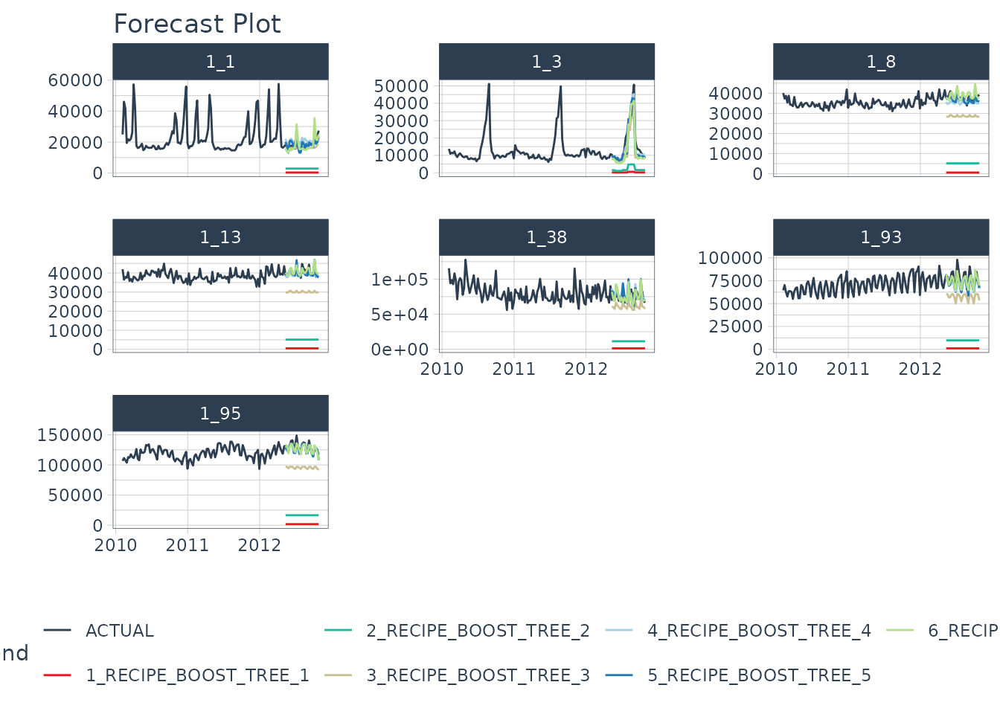

Hyperparameter Tuning with Parallel Processing
Source:vignettes/parallel-processing.Rmd
parallel-processing.RmdTrain
modeltimemodels at scale with parallel processing
Fitting many time series models can be an expensive process. To help
speed up computation, modeltime now includes
parallel processing, which is support for
high-performance computing by spreading the model fitting steps across
multiple CPUs or clusters.
In this example, we go through a common Hyperparameter
Tuning workflow that shows off the modeltime
parallel processing integration and support for
workflowsets from the tidymodels ecosystem.
Out-of-the-Box
Parallel Processing Functionality
Included
The modeltime package (>= 0.6.1) comes with
parallel processing functionality.
Use of
parallel_start()andparallel_stop()to simplify the parallel processing setup.Use of
create_model_grid()to help generatingparsnipmodel specs fromdialsparameter grids.Use of
modeltime_fit_workflowset()for initial fitting many models in parallel usingworkflowsetsfrom thetidymodelsecosystem.Use of
modeltime_refit()to refit models in parallel.Use of
control_fit_workflowset()andcontrol_refit()for controlling the fitting and refitting of many models.
How to Use Parallel Processing
Let’s go through a common Hyperparameter Tuning
workflow that shows off the modeltime parallel
processing integration and support for
workflowsets from the tidymodels ecosystem.
Libraries
Load the following libraries.
# Machine Learning
library(modeltime)
library(tidymodels)
library(workflowsets)
# Core
library(tidyverse)
library(timetk)Setup Parallel Backend
The modeltime package uses parallel_start()
to simplify setup, which integrates multiple backend options for
parallel processing including:
.method = "parallel"(default): Uses theparallelanddoParallelpackages..method = "spark": Usessparklyr. See our tutorial, The Modeltime Spark Backend.
Parallel Setup
I’ll set up this tutorial to use two (2) cores using the default
parallel package.
To simplify creating clusters,
modeltimeincludesparallel_start(). We can simply supply the number of cores we’d like to use. To detect how many physical cores you have, you can runparallel::detectCores(logical = FALSE).The
.methodargument specifies that we want theparallelbackend.
parallel_start(2, .method = "parallel")Spark Setup
We could optionally run this tutorial with the Spark Backend. For more information, refer to our tutorial The Modeltime Spark Backend.
# OPTIONAL - Run using spark backend
library(sparklyr)
sc <- spark_connect(master = "local")
parallel_start(sc, .method = "spark")Load Data
We’ll use the walmart_sales_weeekly dataset from
timetk. It has seven (7) time series that represent weekly
sales demand by department.
dataset_tbl <- walmart_sales_weekly %>%
select(id, Date, Weekly_Sales)
dataset_tbl %>%
group_by(id) %>%
plot_time_series(
.date_var = Date,
.value = Weekly_Sales,
.facet_ncol = 2,
.interactive = FALSE
)
Train / Test Splits
Use time_series_split() to make a temporal split for all
seven time series.
splits <- time_series_split(
dataset_tbl,
assess = "6 months",
cumulative = TRUE
)
splits %>%
tk_time_series_cv_plan() %>%
plot_time_series_cv_plan(Date, Weekly_Sales, .interactive = F)
Recipe
Make a preprocessing recipe that generates time series features.
recipe_spec_1 <- recipe(Weekly_Sales ~ ., data = training(splits)) %>%
step_timeseries_signature(Date) %>%
step_rm(Date) %>%
step_normalize(Date_index.num) %>%
step_zv(all_predictors()) %>%
step_dummy(all_nominal_predictors(), one_hot = TRUE)Model Specifications
We’ll make 6 xgboost model specifications using
boost_tree() and the “xgboost” engine. These will be
combined with the recipe from the previous step using a
workflow_set() in the next section.
The general idea
We can vary the learn_rate parameter to see it’s effect
on forecast error.
# XGBOOST MODELS
model_spec_xgb_1 <- boost_tree(learn_rate = 0.001) %>%
set_engine("xgboost")
model_spec_xgb_2 <- boost_tree(learn_rate = 0.010) %>%
set_engine("xgboost")
model_spec_xgb_3 <- boost_tree(learn_rate = 0.100) %>%
set_engine("xgboost")
model_spec_xgb_4 <- boost_tree(learn_rate = 0.350) %>%
set_engine("xgboost")
model_spec_xgb_5 <- boost_tree(learn_rate = 0.500) %>%
set_engine("xgboost")
model_spec_xgb_6 <- boost_tree(learn_rate = 0.650) %>%
set_engine("xgboost")A faster way
You may notice that this is a lot of repeated code to adjust the
learn_rate. To simplify this process, we can use
create_model_grid().
model_tbl <- tibble(
learn_rate = c(0.001, 0.010, 0.100, 0.350, 0.500, 0.650)
) %>%
create_model_grid(
f_model_spec = boost_tree,
engine_name = "xgboost",
mode = "regression"
)
model_tbl
#> # A tibble: 6 × 2
#> learn_rate .models
#> <dbl> <list>
#> 1 0.001 <spec[+]>
#> 2 0.01 <spec[+]>
#> 3 0.1 <spec[+]>
#> 4 0.35 <spec[+]>
#> 5 0.5 <spec[+]>
#> 6 0.65 <spec[+]>Extracting the model list
We can extract the model list for use with our
workflowset next. This is the same result if we would have
placed the manually generated 6 model specs into a
list().
model_list <- model_tbl$.models
model_list
#> [[1]]
#> Boosted Tree Model Specification (regression)
#>
#> Main Arguments:
#> learn_rate = 0.001
#>
#> Computational engine: xgboost
#>
#>
#> [[2]]
#> Boosted Tree Model Specification (regression)
#>
#> Main Arguments:
#> learn_rate = 0.01
#>
#> Computational engine: xgboost
#>
#>
#> [[3]]
#> Boosted Tree Model Specification (regression)
#>
#> Main Arguments:
#> learn_rate = 0.1
#>
#> Computational engine: xgboost
#>
#>
#> [[4]]
#> Boosted Tree Model Specification (regression)
#>
#> Main Arguments:
#> learn_rate = 0.35
#>
#> Computational engine: xgboost
#>
#>
#> [[5]]
#> Boosted Tree Model Specification (regression)
#>
#> Main Arguments:
#> learn_rate = 0.5
#>
#> Computational engine: xgboost
#>
#>
#> [[6]]
#> Boosted Tree Model Specification (regression)
#>
#> Main Arguments:
#> learn_rate = 0.65
#>
#> Computational engine: xgboostWorkflowsets
With the workflow_set() function, we can combine the 6
xgboost models with the 1 recipe to return six (6) combinations of
recipe and model specifications. These are currently untrained
(unfitted).
model_wfset <- workflow_set(
preproc = list(
recipe_spec_1
),
models = model_list,
cross = TRUE
)
model_wfset
#> # A workflow set/tibble: 6 × 4
#> wflow_id info option result
#> <chr> <list> <list> <list>
#> 1 recipe_boost_tree_1 <tibble [1 × 4]> <opts[0]> <list [0]>
#> 2 recipe_boost_tree_2 <tibble [1 × 4]> <opts[0]> <list [0]>
#> 3 recipe_boost_tree_3 <tibble [1 × 4]> <opts[0]> <list [0]>
#> 4 recipe_boost_tree_4 <tibble [1 × 4]> <opts[0]> <list [0]>
#> 5 recipe_boost_tree_5 <tibble [1 × 4]> <opts[0]> <list [0]>
#> 6 recipe_boost_tree_6 <tibble [1 × 4]> <opts[0]> <list [0]>Parallel Training (Fitting)
We can train each of the combinations in parallel.
Controlling the Fitting Proces
Each fitting function in modeltime has a “control”
function:
The control functions help the user control the verbosity (adding
remarks while training) and set up parallel processing. We can see the
output when verbose = TRUE and
allow_par = TRUE.
-
allow_par: Whether or not the user has indicated that parallel processing should be used.
If the user has set up parallel processing externally, the clusters will be reused.
If the user has not set up parallel processing, the fitting (training) process will set up parallel processing internally and shutdown. Note that this is more expensive, and usually costs around 10-15 seconds to set up.
verbose: Will return important messages showing the progress of the fitting operation.
cores: The cores that the user has set up. Since we’ve already set up
doParallelto use 2 cores, the control recognizes this.packages: The packages are packages that will be sent to each of the workers.
control_fit_workflowset(
verbose = TRUE,
allow_par = TRUE
)
#> workflowset control object
#> --------------------------
#> allow_par : TRUE
#> cores : 2
#> verbose : TRUE
#> packages : modeltime parsnip workflows dplyr stats lubridate tidymodels timetk rsample recipes yardstick dials tune forcats stringr readr tidyverse workflowsets tidyr tibble purrr modeldata infer ggplot2 scales broom graphics grDevices utils datasets methods baseFitting Using Parallel Backend
We use the modeltime_fit_workflowset() and
control_fit_workflowset() together to train the unfitted
workflowset in parallel.
model_parallel_tbl <- model_wfset %>%
modeltime_fit_workflowset(
data = training(splits),
control = control_fit_workflowset(
verbose = TRUE,
allow_par = TRUE
)
)
#> Using existing parallel backend with 2 clusters (cores)...
#> Beginning Parallel Loop | 0.013 seconds
#> Finishing parallel backend. Clusters are remaining open. | 19.774 seconds
#> Close clusters by running: `parallel_stop()`.
#> Total time | 19.775 secondsThis returns a modeltime table.
model_parallel_tbl
#> # Modeltime Table
#> # A tibble: 6 × 3
#> .model_id .model .model_desc
#> <int> <list> <chr>
#> 1 1 <workflow> RECIPE_BOOST_TREE_1
#> 2 2 <workflow> RECIPE_BOOST_TREE_2
#> 3 3 <workflow> RECIPE_BOOST_TREE_3
#> 4 4 <workflow> RECIPE_BOOST_TREE_4
#> 5 5 <workflow> RECIPE_BOOST_TREE_5
#> 6 6 <workflow> RECIPE_BOOST_TREE_6Comparison to Sequential Backend
We can compare to a sequential backend. We have a slight perfomance boost. Note that this performance benefit increases with the size of the training task.
model_sequential_tbl <- model_wfset %>%
modeltime_fit_workflowset(
data = training(splits),
control = control_fit_workflowset(
verbose = TRUE,
allow_par = FALSE
)
)
#> ℹ Fitting Model: 1
#> ✔ Model Successfully Fitted: 1
#> ℹ Fitting Model: 2
#> ✔ Model Successfully Fitted: 2
#> ℹ Fitting Model: 3
#> ✔ Model Successfully Fitted: 3
#> ℹ Fitting Model: 4
#> ✔ Model Successfully Fitted: 4
#> ℹ Fitting Model: 5
#> ✔ Model Successfully Fitted: 5
#> ℹ Fitting Model: 6
#> ✔ Model Successfully Fitted: 6
#> Total time | 23.735 secondsAccuracy Assessment
We can review the forecast accuracy. We can see that Model 5 has the lowest MAE.
model_parallel_tbl %>%
modeltime_calibrate(testing(splits)) %>%
modeltime_accuracy() %>%
table_modeltime_accuracy(.interactive = FALSE)| Accuracy Table | ||||||||
| .model_id | .model_desc | .type | mae | mape | mase | smape | rmse | rsq |
|---|---|---|---|---|---|---|---|---|
| 1 | RECIPE_BOOST_TREE_1 | Test | 55572.50 | 98.52 | 1.63 | 194.17 | 66953.92 | 0.96 |
| 2 | RECIPE_BOOST_TREE_2 | Test | 48819.23 | 86.15 | 1.43 | 151.49 | 58992.30 | 0.96 |
| 3 | RECIPE_BOOST_TREE_3 | Test | 13286.28 | 21.41 | 0.39 | 24.70 | 17271.50 | 0.98 |
| 4 | RECIPE_BOOST_TREE_4 | Test | 3802.13 | 8.11 | 0.11 | 8.05 | 5558.56 | 0.98 |
| 5 | RECIPE_BOOST_TREE_5 | Test | 3361.45 | 7.01 | 0.10 | 7.08 | 5233.28 | 0.98 |
| 6 | RECIPE_BOOST_TREE_6 | Test | 3645.01 | 8.76 | 0.11 | 9.20 | 5420.95 | 0.98 |
Forecast Assessment
We can visualize the forecast.
model_parallel_tbl %>%
modeltime_forecast(
new_data = testing(splits),
actual_data = dataset_tbl,
keep_data = TRUE
) %>%
group_by(id) %>%
plot_modeltime_forecast(
.facet_ncol = 3,
.interactive = FALSE
)
Summary
We just showcased a simple Hyperparameter Tuning example using Parallel Processing. But this is a simple problem. And, there’s a lot more to learning time series.
- Many more algorithms
- Ensembling
- Machine Learning
- Deep Learning
- Scalable Modeling: 10,000+ time series
Your probably thinking how am I ever going to learn time series forecasting. Here’s the solution that will save you years of struggling.
Take the High-Performance Forecasting Course
Become the forecasting expert for your organization
High-Performance Time Series Course
Time Series is Changing
Time series is changing. Businesses now need 10,000+ time series forecasts every day. This is what I call a High-Performance Time Series Forecasting System (HPTSF) - Accurate, Robust, and Scalable Forecasting.
High-Performance Forecasting Systems will save companies by improving accuracy and scalability. Imagine what will happen to your career if you can provide your organization a “High-Performance Time Series Forecasting System” (HPTSF System).
How to Learn High-Performance Time Series Forecasting
I teach how to build a HPTFS System in my High-Performance Time Series Forecasting Course. You will learn:
-
Time Series Machine Learning (cutting-edge) with
Modeltime- 30+ Models (Prophet, ARIMA, XGBoost, Random Forest, & many more) -
Deep Learning with
GluonTS(Competition Winners) - Time Series Preprocessing, Noise Reduction, & Anomaly Detection
- Feature engineering using lagged variables & external regressors
- Hyperparameter Tuning
- Time series cross-validation
- Ensembling Multiple Machine Learning & Univariate Modeling Techniques (Competition Winner)
- Scalable Forecasting - Forecast 1000+ time series in parallel
- and more.
Become the Time Series Expert for your organization.